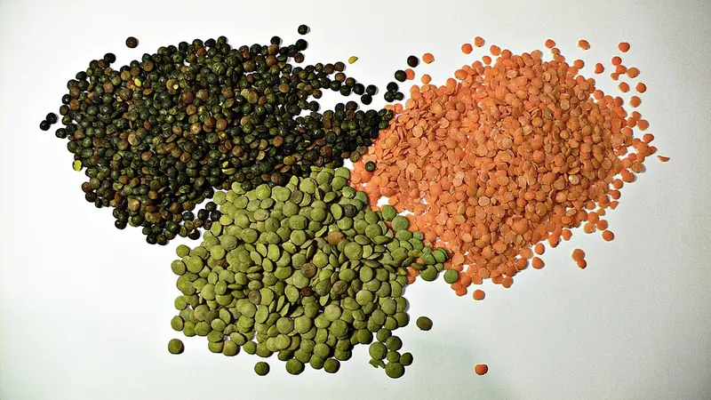

Cambridge Lower Secondary · Science 0893 · Stage 8 · Biology
A Balanced Diet, Energy Stores and Lifestyle
The nutrients in a balanced diet and what each one does, how animals get and store energy, and how diet and smoking affect growth and health — with food-label calculations and Checkpoint-style practice.
British & IGCSE › Checkpoint 8 › Checkpoint 8 Science — Complete Course
- Name the parts of a balanced diet — protein, carbohydrates, fats and oils, water, minerals (calcium and iron) and vitamins (A, C and D) — and describe what each one does (8Bp.01)
- Understand that animals store energy as carbohydrates and fats, and that animals eat food to get energy and nutrients (8Bp.02)
- Discuss how lifestyle — including diet and smoking — affects human growth, development and health (8Bp.03)
Food gives your body two things: energy (to move, grow, keep warm and keep every cell working) and nutrients (the raw materials to build and repair the body). Plants make their own food by photosynthesis, but animals cannot, so animals — including humans — must eat food. A balanced diet contains all the nutrients in the right amounts, and the right amount of energy for the person.
| Word / phrase | Meaning / use |
|---|---|
| nutrient | عنصر غذائي — a substance in food that the body needs |
| balanced diet | غذاء متوازن — all the nutrients in the right amounts |
| carbohydrate | الكربوهيدرات (النشويات والسكريات) — the main source of energy |
| protein | البروتين — for growth and repair |
| fats and oils | الدهون والزيوت — a store of energy; keep the body warm |
| mineral | معدن (أملاح معدنية) — e.g. calcium and iron |
| vitamin | فيتامين — needed in small amounts to stay healthy |
| deficiency | نقص — not getting enough of a nutrient |
| malnutrition | سوء التغذية — eating too much, too little or the wrong balance |
| obesity | السمنة — being very overweight |
| kilojoule (kJ) | كيلوجول — the unit for energy in food |
The seven parts of a balanced diet
| Nutrient | What it does in the body | Good sources |
|---|---|---|
| Carbohydrates (starch and sugars) | The main source of energy for the body's cells | bread (aish baladi), rice, pasta, potatoes, dates, honey |
| Fats and oils | A store of energy; insulation (keeps the body warm); protects organs such as the kidneys | butter, ghee (samna), cooking oil, nuts, tahini, cheese |
| Protein | Growth and repair — building new cells, muscles and other tissues | meat, chicken, fish, eggs, milk, beans (ful), lentils |
| Water | Most of the blood plasma is water, so it transports substances; reactions in cells happen in water; sweat cools you; urine removes waste | drinking water, drinks, fruit and vegetables, soup |
| Minerals: calcium | Strong bones and teeth | milk, cheese, yoghurt, sardines (with the bones), sesame |
| Minerals: iron | Needed to make haemoglobin in red blood cells, which carries oxygen | red meat, liver, lentils, beans, dark green leafy vegetables (spinach) |
| Vitamin A | Good eyesight, especially seeing in dim light; healthy skin | carrots, sweet potatoes, mango, liver, eggs |
| Vitamin C | Healthy skin and gums; helps wounds heal; helps the body fight infection | guava, oranges, lemons, tomatoes, green peppers |
| Vitamin D | Helps the body absorb calcium, so bones and teeth grow strong | made in your skin in sunlight; oily fish (sardines, salmon), egg yolk |

Also needed: fibre (from vegetables, fruit, brown bread, beans) is not digested, but it keeps food moving through the gut and prevents constipation. Your objective does not list fibre, but it is part of a healthy diet and may appear in questions about meals.
What happens when a nutrient is missing (deficiency)
| Missing nutrient | Effect (deficiency disease or symptom) |
|---|---|
| Protein | Slow growth in children; weak muscles; wounds heal slowly |
| Iron | Anaemia: not enough haemoglobin, so less oxygen is carried — the person is tired, pale and short of breath |
| Calcium or vitamin D | Weak, soft bones that can bend (rickets in children); weak teeth |
| Vitamin A | Poor eyesight in dim light (night blindness) |
| Vitamin C | Scurvy: bleeding gums, wounds that do not heal |
| Water | Dehydration: headache, tiredness, dark urine |
Link: iron and red blood cells. On the Blood page you learned that red blood cells carry oxygen. Without enough iron the body cannot make enough haemoglobin, so less oxygen reaches the cells for respiration, less energy is released and the person feels tired.
النشويات = طاقة سريعة. الدهون = مخزن طاقة + تدفئة + حماية الأعضاء. البروتين = بناء وتعويض الخلايا (النمو). الكالسيوم = عضم وسنان. الحديد = الهيموجلوبين في كرات الدم الحمرا اللي بتشيل الأكسجين (نقصه = أنيميا وتعب). فيتامين A = النظر في الضلمة. فيتامين C = اللثة والجلد والتئام الجروح. فيتامين D = بيساعد الجسم يمتص الكالسيوم، وجلدك بيعمله في الشمس.
Energy: why animals eat, and how they store energy
Energy in food is measured in kilojoules (kJ). Food labels show the energy in 100 g and in one portion. Foods with a lot of fat contain the most energy for their mass.
| Energy store | Where it is kept in animals | Notes |
|---|---|---|
| Carbohydrate (stored as glycogen) | In the liver and muscles | A small, quick store — used up in a day or less without food |
| Fat | Under the skin and around organs | A large, long-term store. 1 g of fat releases about twice as much energy as 1 g of carbohydrate (about 37 kJ compared with about 17 kJ) |
- Animals cannot make their own food, so they consume (eat) other organisms to get energy and nutrients.
- If an animal takes in more energy than it uses, the extra is stored, mostly as fat, and the animal gains mass.
- If it takes in less energy than it uses, it uses its stores of carbohydrate and then fat, and it loses mass.
- Examples: a camel's hump is a store of fat (not water) that it can use for energy when food is scarce in the desert. Bears build up thick fat stores before winter. Seals and whales have a thick layer of fat (blubber) that is both an energy store and insulation.
Different people need different amounts of energy. A person needs more energy if they are more active, bigger, growing (teenagers), or pregnant. For example, a builder who lifts heavy loads all day needs much more energy than an office worker of the same age.
- Method for food-label calculations: find the energy per 100 g on the label.
- Divide by 100 to get the energy in 1 g.
- Multiply by the mass you eat. (Shortcut: energy in portion = energy per 100 g × mass ÷ 100.)
- To find a percentage of daily needs: energy in portion ÷ daily need × 100.
Lifestyle, growth and health
Your lifestyle is the way you live: what you eat, how active you are, whether you smoke, how much you sleep. Lifestyle choices affect how well children grow and develop, and how healthy people are now and later in life.
| Lifestyle factor | Possible effects on growth, development and health |
|---|---|
| Too much energy (lots of fatty and sugary food, little exercise) | Extra energy stored as fat → overweight and obesity → higher risk of heart disease, type 2 diabetes, high blood pressure and joint problems |
| Too much sugar | Tooth decay; adds extra energy |
| Too much salt | High blood pressure, which can lead to heart disease and strokes |
| Too little food / too little protein | Underweight; children do not grow properly and may develop more slowly; tiredness; more infections |
| Missing minerals or vitamins | Deficiency diseases: anaemia (iron), rickets (calcium / vitamin D), scurvy (vitamin C), night blindness (vitamin A) |
| Regular exercise | Uses energy, strengthens the heart, lungs, muscles and bones; lowers the risk of obesity and heart disease |
| Smoking | See the table below — damages the lungs, heart and blood vessels and harms unborn babies |
Smoking and health
| Substance in tobacco smoke | What it does |
|---|---|
| Nicotine | A drug that is addictive (makes it hard to stop); increases heart rate and blood pressure |
| Tar | A sticky substance that coats the lungs; contains chemicals that cause cancer (lung, mouth and throat cancer); damages the cilia, so mucus and dirt collect → smoker's cough and bronchitis; damages the walls of the alveoli (less surface area for gas exchange) |
| Carbon monoxide | A poisonous gas that joins to red blood cells in place of oxygen, so the blood carries less oxygen — smokers get out of breath more easily |
- Smoking in pregnancy: carbon monoxide reduces the oxygen that reaches the baby through the mother's blood. The baby may grow less before birth (low birth mass) and may be born early.
- Second-hand smoke: people who breathe in other people's smoke — especially children — are also harmed (more asthma and chest infections).
- Shisha (water pipe) is not a safe choice: its smoke still contains tar, nicotine and carbon monoxide.
Exam technique — data about health: describe the pattern with numbers ("as the number of cigarettes per day increases, the death rate increases, from 10 to 230 per 100 000"). Data like this shows a link (correlation). Scientists also found how tar causes cancer, which is why we can say smoking causes lung cancer. Not every smoker gets lung cancer, and some non-smokers do — the risk is much higher for smokers.
السجاير فيها 3 حاجات خطيرة: النيكوتين (بيخليك تدمن)، القطران (بيسبب سرطان وبيبوّظ الشعيرات اللي بتنضف الرئة فتيجي كحة المدخنين)، وأول أكسيد الكربون (بيركب على كرات الدم الحمرا مكان الأكسجين، فالجسم ياخد أكسجين أقل). والشيشة مش أأمن — دخانها فيه نفس المواد.
Worked examples
Worked example 1 (functions) Complete the table. [3] Nutrient | Function calcium | ______ ______ | growth and repair of cells vitamin D | ______
- calcium → strong bones and teeth [1]
- protein → growth and repair [1]
- vitamin D → helps the body absorb calcium (for strong bones and teeth) [1]
- Common mistake: writing "vitamin D makes bones strong" — the mark scheme wants the idea of absorbing calcium.
Worked example 2 (food label) A breakfast cereal contains 1 600 kJ per 100 g. Hana eats a 40 g portion. (a) Calculate the energy in her portion. [1] (b) Hana needs 9 000 kJ each day. What percentage of her daily energy does the portion give? Give your answer to 1 decimal place. [2]
- (a) 1 600 × 40 ÷ 100 = 640 kJ
- (b) 640 ÷ 9 000 × 100 = 7.11… = 7.1% [1 for the method, 1 for the answer; ecf from (a)]
- Common mistake: using 1 600 kJ as the energy in the portion. Always check whether the label gives energy per 100 g or per portion.
Worked example 3 (energy stores) Camels can live for many days in the desert without food. Explain how the camel's hump helps. [2]
- The hump is a store of fat. [1]
- When the camel cannot find food, it uses the fat for energy (fat releases a lot of energy per gram). [1]
- Common mistake: "The hump stores water." It stores fat.
Worked example 4 (deficiency) Youssef often feels tired and is short of breath when he climbs stairs. A blood test shows his red blood cells contain too little haemoglobin. (a) Name the mineral he is probably short of. [1] (b) Suggest two foods he should eat more of. [1] (c) Explain why he feels tired. [2]
- (a) iron
- (b) any two of: red meat, liver, lentils, beans, spinach / dark green leafy vegetables
- (c) Less haemoglobin, so his blood carries less oxygen to his cells [1]; so his cells carry out less respiration and release less energy [1].
- Exam technique: in a 2-mark "explain", give the cause and the effect, linked with "so".
Worked example 5 (smoking in pregnancy) Explain why a woman who smokes during pregnancy may have a baby with a low birth mass. [3]
- Cigarette smoke contains carbon monoxide, which joins to her red blood cells. [1]
- Her blood carries less oxygen, so less oxygen reaches the baby. [1]
- The baby's cells get less oxygen for respiration / less energy for growth, so the baby grows less. [1]
- Common mistake: writing "the smoke goes into the baby's lungs". The baby does not breathe air before birth; it gets oxygen from the mother's blood.
Worked example 6 (evaluating a meal) Omar's lunch every day is fried potatoes, white bread and a fizzy drink. Give two reasons why this is not a balanced diet and suggest one improvement. [3]
- Too much fat and sugar / too much energy, which can lead to obesity. [1]
- Very little protein, vitamins (e.g. vitamin C, A), minerals (calcium, iron) or fibre. [1]
- Improvement: e.g. replace the fizzy drink with water or milk; add ful, lentils, eggs or chicken for protein; add salad or fruit for vitamins and fibre. [1]
- Saying "protein gives energy" as its main job. The main job of protein is growth and repair; carbohydrates and fats give energy.
- Writing "iron makes blood" — say iron is needed to make haemoglobin in red blood cells, which carries oxygen.
- Mixing up vitamin C (skin, gums, healing) and vitamin D (absorbing calcium for bones).
- Forgetting water as part of a balanced diet.
- Thinking a balanced diet means equal amounts of each nutrient. It means the right amounts — you need much more carbohydrate than vitamins.
- Saying carbon monoxide causes cancer. Tar causes cancer; carbon monoxide reduces the oxygen carried by the blood.
- Reading energy per 100 g as energy per portion.
- Matching lines: nutrient → function, or nutrient → food source.
- Complete a table of nutrients and functions; use the exact words (e.g. "growth and repair", "absorb calcium").
- Calculations from a food label: energy in a portion, percentage of daily needs. Show your working and units.
- Read a graph or table about diet, exercise or smoking and describe the trend with numbers.
- Suggest and explain: why a person is tired (iron), why bones are weak (calcium / vitamin D), why a smoker is breathless (carbon monoxide, damaged alveoli).
- Discuss questions: give both the effect and the reason, and link them with "because" or "so".
Practice
- Balanced diet = protein, carbohydrates, fats and oils, water, minerals (calcium, iron) and vitamins (A, C, D) in the right amounts.
- Carbohydrates: energy. Fats: energy store, insulation, protection. Protein: growth and repair. Calcium: bones and teeth. Iron: haemoglobin to carry oxygen. A: eyesight. C: skin, gums, healing. D: absorb calcium.
- Animals cannot make food, so they eat to get energy and nutrients; they store energy as carbohydrate (liver, muscles) and fat (under the skin, around organs).
- Too much energy → stored as fat → obesity, heart disease, diabetes; too little food or protein → poor growth.
- Smoking: nicotine (addictive), tar (cancer, damaged cilia and alveoli), carbon monoxide (less oxygen in the blood; smaller babies).
All pages in this course
Start here
- Stage 8 Science: The Tests and How to Prepare
- Thinking and Working Scientifically: Models, Investigations and Analysing Results
Biology
- Joints and Antagonistic Muscles
- Blood and Its Components
- Breathing, Gas Exchange and Diffusion in the Lungs
- A Balanced Diet, Energy Stores and Lifestyle
- Aerobic Respiration
- Ecosystems, Bioaccumulation and Invasive Species
Chemistry
- The Structure of the Atom
- Purity, Concentration and Chromatography
- Word Equations, Exothermic and Endothermic Reactions
- The Reactivity of Metals
- Impure Products and Solubility of Salts
Physics
- Speed and Distance–Time Graphs
- Balanced and Unbalanced Forces, and Moments
- Pressure, Particles and Diffusion
- Reflection and Refraction
- Dispersion and Colour
- Magnetic Fields and Electromagnets
Earth and space
- The Earth's Magnetic Field and Earth's Resources
- Climate, Weather and Climate Change
- Galaxies and Asteroids
Practice tests